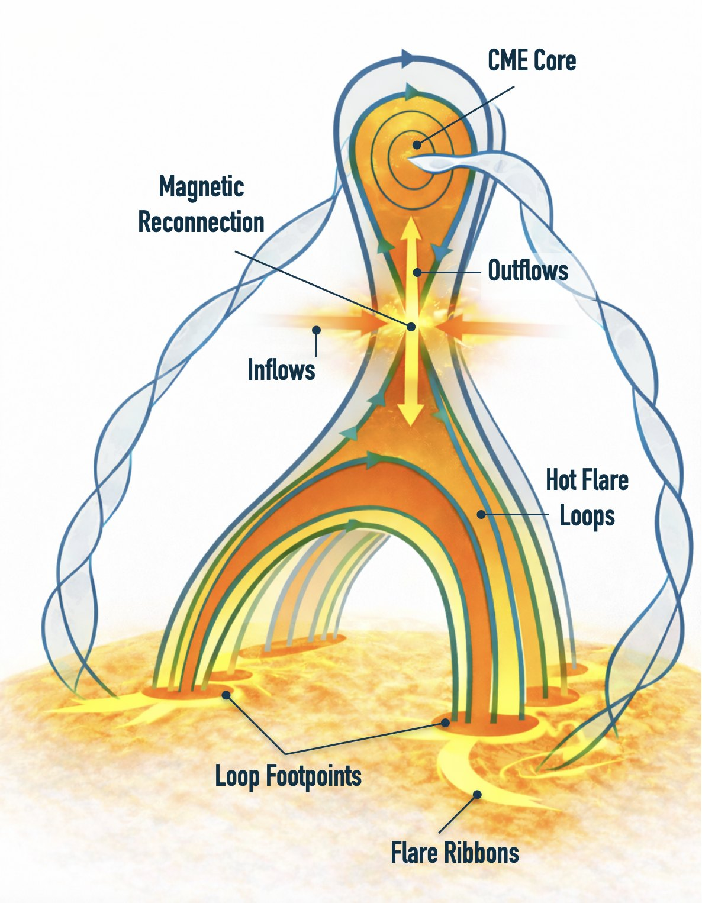
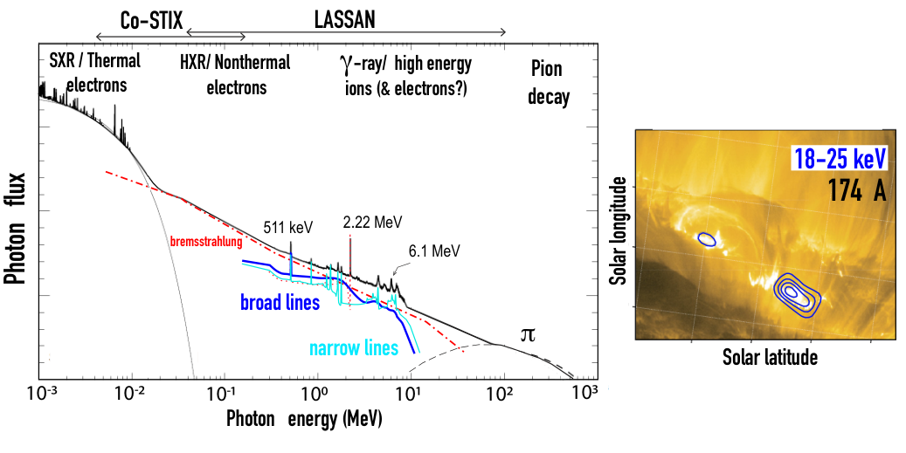
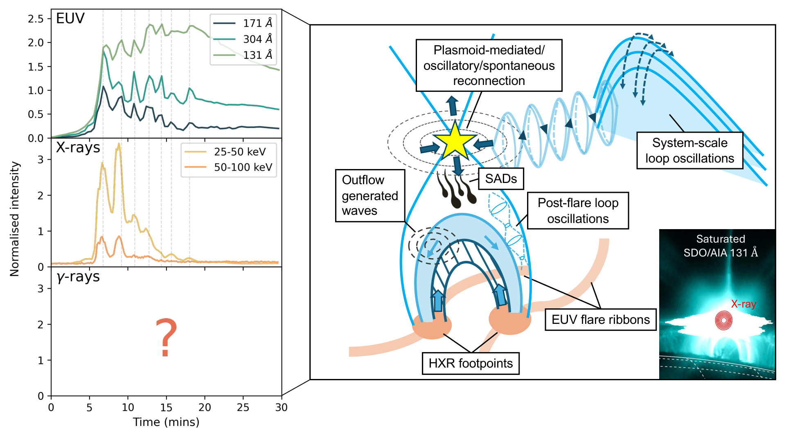

How are electrons and ions accelerated?
SO‑1 / SO‑2
Measure electron and ion spectra, composition, γ-ray lines, pion-decay signatures and timing offsets.
Enabled by LASSAN spectroscopy + HiFI flare geometry.
Science case
SPARK addresses the physical chain from magnetic reconnection to accelerated particles, plasma heating, radiation and atmospheric response.
Astrophysical context
Non-thermal particle acceleration shapes the high-energy Universe, from supernova remnant shocks to relativistic jets. Solar flares provide the uniquely accessible case where acceleration sites, energetic particles and plasma response can be observed together.
How do magnetised plasmas explosively convert stored magnetic energy into accelerated particles and heated plasma?
Science figures

Why this matters: The figure shows where energy is released and where accelerated particles deposit energy in the lower atmosphere.

Why this matters: The figure shows why simultaneous keV-to-MeV diagnostics are needed to connect electrons, ions and hot plasma.

Why this matters: The figure summarises the coupled system of reconnection, waves, instabilities and particle acceleration that SPARK will test.
Science traceability
SO‑1 / SO‑2
Measure electron and ion spectra, composition, γ-ray lines, pion-decay signatures and timing offsets.
Enabled by LASSAN spectroscopy + HiFI flare geometry.
SO‑3 / SO‑4 / SO‑5
Track precursor heating, ribbons, kernels, evaporation, coronal rain and gradual-phase heating.
Enabled by HiFI multi-thermal imaging + LASSAN HXR/γ-ray diagnostics.
SO‑6 / SO‑7 / SO‑8
Resolve QPPs, plasmoids, SADs, loop oscillations and wave-particle coupling.
Enabled by sub-second EUV imaging + high-cadence high-energy time series.
Science objectives
Next step
Learn how the observing strategy and L1 mission profile are designed to deliver these measurements.